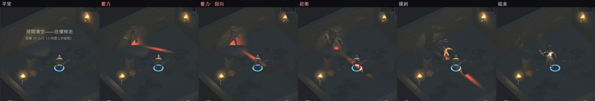
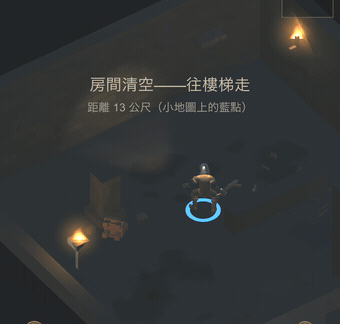
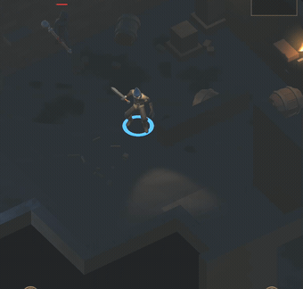
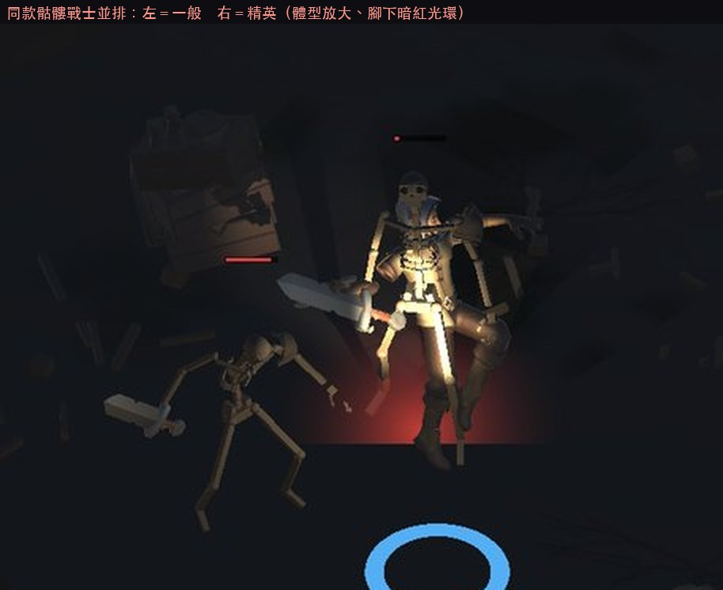

地城迴響 · 2.2 怪物（已實作）
照你選的範圍做完了：B（啟用兩種閒置模型）、E（精英與安全層前高峰）、 加上 D（新行為）。A 沒有做——怪物一樣第 18 層才開始有變化， 第 1～27 層一個字都沒動，這一點列為驗證的第一項在守。
為什麼在 C 與 D 之間選了 D。B 單獨做的話，亡靈騎士與亡靈術士只是 「血量不同的換皮」——現有的差異只有血量和「近戰 or 放火球」。 綁上 D 之後這兩隻各自有身分，B 與 D 互相加成；B＋C 則是兩件不相干的事各做一半。 C（暗影怪）要動照明判定，那是這款的核心系統、又剛加了技能光源， 風險最高，不該跟三件事擠在同一版。
這是遊戲裡第一個「看得到預告、可以閃」的攻擊。 既有的近戰是碰到就扣血，玩家只能靠不要靠近；衝鋒則是先停下蓄力 0.55 秒， 然後往蓄力結束那一刻的玩家位置直線撲出。 方向在起衝時鎖定，所以橫向走開真的躲得掉——會追蹤的衝鋒等於沒有預告。


指向帶是做完之後才補的。第一版只有腳下的紅圈，拍出來一看—— 它只告訴玩家「有事要發生」，沒告訴玩家「往哪邊」， 而這個攻擊的破解方式正是橫向移動。 這款已經被回報過三輪「效果不夠明顯」，這次不等第四輪。

召喚出來的小兵走的是跟正常出怪同一套接線（進戰鬥清單、接上死亡事件）， 所以技能掃得到它、打死了也會正常掉東西。這件事有列進驗證—— 少接一條線的話，小兵會變成打不到或打死沒反應的東西，而且不會報錯。

用意是把後期的難度從「一群很煩」換成「這一隻很難」。 原本敵人數在第 20 層就撞到 15 隻上限，之後只剩數值線性成長， 沒有需要判斷的東西；精英讓玩家重新要決定「先打誰、用不用技能」。
安全層（第 6、12 層）的前一層，敵人 +3 隻、精英機率 +10%， 讓「撐到補給點」有鬆一口氣的感覺。實測第 4 層平均 7.5 隻、第 5 層平均 11.5 隻。
這一項只在第 17 層以內成立，而且是刻意的。 第 18 層之後的樓層配置是用「那一層的種子」抽的，而下一層的種子要等真的走下去 才會產生——拿現在的種子去算下一層，算出來的是另一回事。 與其做一個「有時候對」的預測，不如在超出設計深度時一律關掉， 深層的張力改由精英承擔（那個不需要預知下一層）。
施法者被逼到牆角時，永遠不會出手。 靠太近時它會進「後退拉開距離」的分支，而背後是牆時位置會被夾回原地， 但那個分支無論如何都直接結束這一幀——結果是被逼到角落的法師 變成完全無害的木頭。玩家把法師逼到牆角是很自然的打法，所以這是真的會遇到的。 既有的骷髏法師也有同樣問題，不只是新的術士。
抓到的過程值得記：召喚的驗證時好時壞，加了診斷輸出才看到 術士停在 4.1 公尺、剛好卡在保持距離門檻 4.2 的內側退不出去。 如果當初只重跑幾次看到「過了」就收工，這個缺陷會留在遊戲裡。
21 項自動檢查，連跑三次結果完全一致。分四組：
| 組別 | 內容 |
|---|---|
| 一、回歸（你的硬條件） | 1～17 層仍然只吐骷髏兵、18 與 22 的門檻沒有被動到 |
| 二、新啟用的兩種 | 28 層亡靈騎士登場、34 層亡靈術士加入；27／33 之前確認不出現 |
| 三、精英與高峰 | 前 3 層 0%、隨深度成長到 22% 封頂；5 與 11 是高峰層；高峰層 7.5→11.5 隻 |
| 四、新行為 （走真實戰鬥路徑） | 衝刺瞬時速度 7.2 m/s（一般移動 1.85）、位移方向與起衝方向差 2.3° （會追蹤的話會偏很多）、召喚的小兵有接上死亡事件、上限生效 |
| 項目 | 說明 |
|---|---|
| C：暗影怪 | 沒做。要動照明判定，建議單獨一版，不跟這三件事混在一起 |
| 敵人的攻擊判定幀 | 沒做。近戰仍然是「碰到就扣血」；衝鋒是目前唯一可以閃的攻擊。 要讓所有近戰都有預備動作，得在每支動畫上標事件，建議留到 2.3 |
| 數值強度 | 精英的 ×2.6／×1.5 與高峰的 +3 隻是我訂的起手值，實際手感要你玩過才知道 |
| 亡靈騎士／術士的登場層數 | 目前 28／34。想更早看到的話改一個函式就好 |